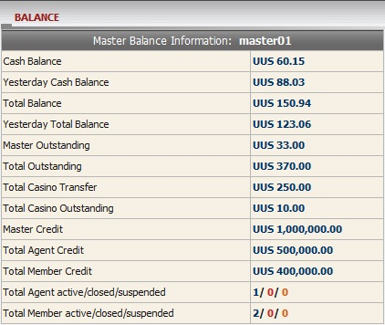

Balance
Definition:
This is overall report that helps master well-informed with his/her current
balance, win/loss amount, paid or received amount.

Balance
Term definition:
-
Cash Balance: current master total win/loss amount including transfer transactions.
- Yesterday Cash Balance: master total win/loss amount till yesterday.
- Total Balance: total paid or received amount that master needs to settle with upline.
- Yesterday Total Balance: total paid or received amount that master needs to settle with upline till yesterday.
- Master Outstanding: total master’s share from member stakes based on his/her position taking on running/waiting tickets.
- Total Outstanding: total member stake on running/waiting tickets including Casino transfer amount.
- Total Casino Transfer: total amount which was transferred from Sport Book to Casino by member.
- Total Casino Outstanding: total member stake on unfinished Casino games (This value only appears when member transfers back money to Sport Book).
- Master Credit: amount of credit given to master by upline.
- Total Agent Credit: total amount of credit given to agents.
- Total Member Credit: total amount of credit are given to all members under this master.
- Total Agent active/closed/suspended: the number of agents which are active/ closed or suspended.
- Total Member active/closed/suspended: the number of members which are active/ closed or suspended.
How to understand the report:
- Cash Balance = 60.15 means currently master wins 60.15.
- Yesterday Cash Balance = 88.03 means till yesterday master won 88.03.
- Total Balance = 150.94 means master will receive 150.94 from Upline.
- Yesterday Total Balance = 123.06 means till yesterday master will receive 123.06 from Upline.
- Master Outstanding = 33 means master might receive a maximum of 33 from all running/waiting tickets.
- Total Outstanding = 370 means currently total member stake on running/waiting tickets including Casino transfer amount is 370.
- Total Casino Transfer = 250 means members transferred from Sportsbook to Casino a total amount of 250.
- Total Casino Outstanding = 10 means members left 10 on unfinished games.
- Master Credit = 1,000,000 means master was initially given 1,000,000 by upline.
- Total Agent Credit = 500,000 means the total credit master gave to all of his agents.
- Total Member Credit = 400,000 means the total credit are given to all members under master01.
- Total Agent active/closed/suspended = 1/0/0 means this master has 1 active/0 closed/0 suspended agent.
- Total Member active/closed/suspended = 2/0/0 means this master has 2 active/0 closed/0 suspended members.